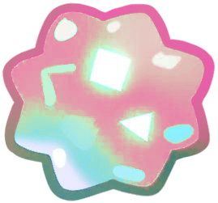

Virgo

Months of the year: Aug and Sep
————⋆✦⋆————
You have found an Virgo star fragment! Look at its colors! It's a very pretty star, it's beautiful, I wonder who it belongs to?
Virgo is one of the largest constellations in the zodiac and is located in the Southern Hemisphere, although it is also visible in the Northern Hemisphere. It is located between the constellations Leo and Libra. Virgo is most visible in the skies of the Northern Hemisphere during the spring months, especially between March and May. Its brightest star, Spica, is easy to identify and is located near the celestial equator, making it visible from many parts of the world... Because it is close to the celestial equator, Virgo can be observed in both the Northern and Southern Hemispheres. In the Northern Hemisphere, it is most visible during the spring, while in the Southern Hemisphere it is visible in the fall.
This star is curious, although it is lost, its light does not stop shining brightly, and it seems to whisper dreams of the cosmos to you.
————⋆✦⋆————
The weaver of dreams
On a very special asteroid lived a little girl who had a magic loom. It was not an ordinary loom: it was made of moon threads and its needles were rays of shooting stars. The girl used this loom to weave the constellations that decorated the night sky. Dressed in a little dress made of star dust, she sat every night in front of her loom. With great care, she chose the brightest threads to create her designs. Some threads sparkled like diamonds, others had colors that no one had ever seen on Earth.
While she wove, she hummed soft songs that made the stars dance in their places. Every stitch was perfect, every design was very well thought out. Sometimes she wove little bears in the sky, other times she made dragons or princesses, and all the stars wanted to be part of her drawings. The girl knew that her work was very important, because her constellations helped travelers find their way and dreamers imagine wonderful stories while looking at the night sky.